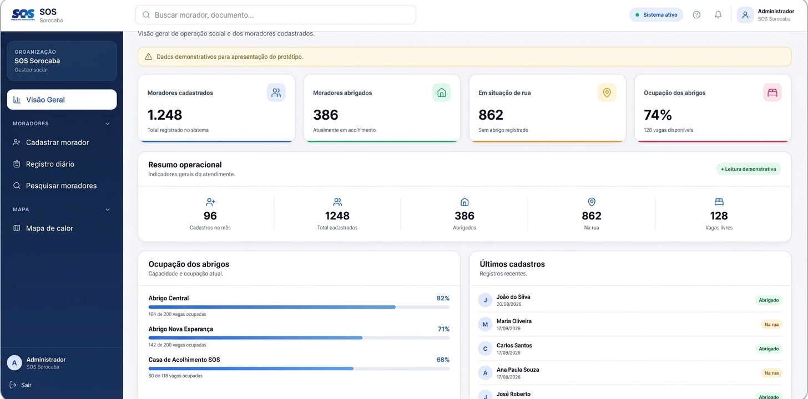

Erradicação da pobreza
Apoia o atendimento a pessoas em situação de vulnerabilidade social, com cadastro e acompanhamento organizados para que ninguém fique sem registro.
O Conecta S.O.S substitui as fichas de papel do Serviço de Obras Sociais de Sorocaba por um sistema web com histórico, painel de indicadores e mapa de calor.

O S.O.S atua em Sorocaba desde 1968. Na entrada de cada pessoa, a informação passa por três etapas manuais.
O resultado é retrabalho, risco de erro de transcrição, perda de informação e dificuldade de consultar o histórico ou prestar contas à prefeitura.
Uma plataforma de cadastro unificado, pensada para voluntários e assistentes sociais usarem durante o atendimento.
Nome, documento, data de nascimento, local de origem e dados sociodemográficos em um só formulário, inclusive para cadastros em massa nas abordagens de campo.
Ficha completa, atividades de que participou, entradas e saídas e a situação atual: abrigado ou em situação de rua.
Registro do fluxo de entrada e saída e das ações realizadas pela ONG, com quem participou de cada atividade.
Cadastrados, abrigados, pessoas em situação de rua, vagas livres e ocupação de cada abrigo, tudo em um só lugar.
Mostra onde há mais relatos de pessoas em situação de rua, para planejar rotas de abordagem e distribuição de suprimentos.
Relatórios por providência, por pessoa ou por período, prontos para a prestação de contas aos órgãos públicos.
O projeto dialoga com três metas da Agenda 2030 da ONU.
Pesquisa aplicada, exploratória e qualitativa, com entrevista ao diretor administrativo do S.O.S, benchmark de soluções parecidas, protótipo no Figma e gestão de tarefas em Kanban no Trello. Veja as tecnologias usadas:


A redução do tempo de cadastro é uma meta. Ela ainda precisa ser validada em uso real, com indicadores como tempo de triagem, número de cadastros, retrabalho e encaminhamentos.
Os dados exibidos no dashboard são demonstrativos.
Acessar dashboardSeis estudantes do Centro Universitário Unifacens, em Sorocaba, na disciplina Usina de Projetos Experimentais (UPX).
Desenvolvedor | Analista de Mercado

Analista de projeto

Scrum Master
Desenvolvedora | Design
Desenvolvedor
Designer